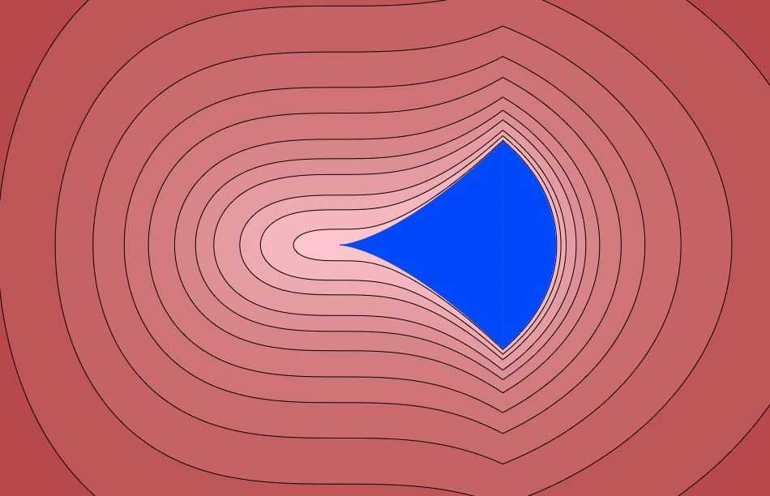

Moment Polynomial Optimization
This Julia package provides tools for solving polynomial and moment optimization problems on semi-algebraic sets defined by polynomial sign and equality constraints. In particular, it allows to optimize vectors of moments sequences that satisfy positivity constraints or mass constraints. It is based on MoMent (MoM) and Sum-of-Squares (SOS) convex relaxations, which are solved by an external Semi-Definite Program (SDP) solvers such as CSDP, MosekTools, ... Extraction tools allow to recover the global optimizers of the problem from optimal moment sequences, using flat truncation properties.
As an illustrative example, we consider the set $S$ defined by the inequalities
\[\left\{\begin{array}{l} x^3 - y^2 \ge 0\\ 1 - x^2 -y^2 \ge 0 \end{array} \right.\]
This is the blue domain below:

We want to maximize the objective function $y^2$ on this domain and to find the maximizer points. Here is how it can be done in MomentPolynomialOpt, with the SDP solver CSDP.
using MomentPolynomialOpt, DynamicPolynomials
using CSDP; mpo_optimizer(CSDP.Optimizer)
X = @polyvar x y
G = [1 - x^2 - y^2, x^3-y^2 ] # Non-negativity constraints
f = y^2 # objective function
v, M = maximize(f, [], G, X, 3) # relaxation at order 3
w, Xi = get_measure(M) # recovers the weighted sum of Dirac measures from the momentsThis gives the following weigts and points of the weight sum of Dirac measures associated to the optimal moment sequence.
\[[ \begin{array}{cc} 0.4999999998860686 & 0.499999999867594 \end{array} ] , \begin{pmatrix} 0.7548776660872802 & 0.7548776660872801 \\ 0.6558656173161549 & -0.6558656173161549 \end{pmatrix}\]
These points, which are the maximizers of the optimization problem are the top and bottom "corner" points of the domain.
Optimization
The package allows to solve optimization problems on Pseudo Moment Sequences (PMS). A PMS is a sequence of values $\mu=(\mu_{\alpha})$ indexed by the monomial exponents $\alpha \in \mathbb{N}^n$ or equivalently a linear functional $\mu: p \in \mathbb{R}[\mathbf{x}] \mapsto \langle \mu, p \rangle = \sum_{\alpha} p_{\alpha} \mu_{\alpha}$ . It is positive if for all $p\in \mathbb{R}[\mathbf{x}]$, we have $\langle \mu, p^2 \rangle \geq 0$ .
Optimization problems of the following form are considered:
\[\begin{array}{rl} \mathrm{inf}_{\mu_i \in PMS} & \sum_i \langle f_i\star \mu_i, 1 \rangle \\ s.t. & \sum_i g_{i,j}\star \mu_i \succeq 0, \quad j=1,\ldots, n_1 \\ & \sum_i h_{i,j}\star \mu_i = 0, \quad j=1,\ldots, n_2\\ & \sum_i \langle p_{i,j}\star \mu_i, 1 \rangle \ge 0 , \quad j=1,\ldots, n_3\\ & \sum_i \langle q_{i,j}\star \mu_i, 1 \rangle = 0, \quad j=1,\ldots, n_4 \\ \end{array}\]
where
- $\mu_i$ are positive PMS,
- $f_i, g_{i,j}, h_{i,j}, p_{i,j}, q_{i,j} \in \mathbb{R}[\mathbf{x}]$ are multivariate polynomials.
The solution of such optimization problem is approximated by the solution of a truncated relaxation of the problem, which is a convex optimization problem on Positive SemiDefinite matrices. Tools to construct such moment relaxation of a given order are available in the package.
Decomposition
Decomposition tools are available to decompose or approximate a PMS by a weighted sum of Dirac measures:
\[\mu \approx \sum_k \omega_k \, \delta_{\xi_k}\]
where $\omega_k\in \mathbb{R}$ (resp. $\mathbb{C}$), $\xi_k \in \mathbb{R}^n$ (resp. $\mathbb{C}^n$) and $\delta_{\xi}$ is the Dirac measure at the point $\xi$.
In the previous example, we use the command get_measure:
w, Xi = get_measure(M)to obtain the weights w and the points Xi (the columns of the matrix):
\[[ \begin{array}{cc} 0.4999999998860686 & 0.499999999867594 \end{array} ] , \begin{pmatrix} 0.7548776660872802 & 0.7548776660872801 \\ 0.6558656173161549 & -0.6558656173161549 \end{pmatrix}\]
so that the optimal moment sequence is approximately represented by the weighted sum of Dirac measures:
\[w[1]\, \delta_{Xi[:,1]} + w[2]\, \delta_{Xi[:,2]}\]
Installation
The package can be installed from Julia as follows:
] add MomentPolynomialOpt
Sources: https://github.com/AlgebraicGeometricModeling/MomentPolynomialOpt.jl.